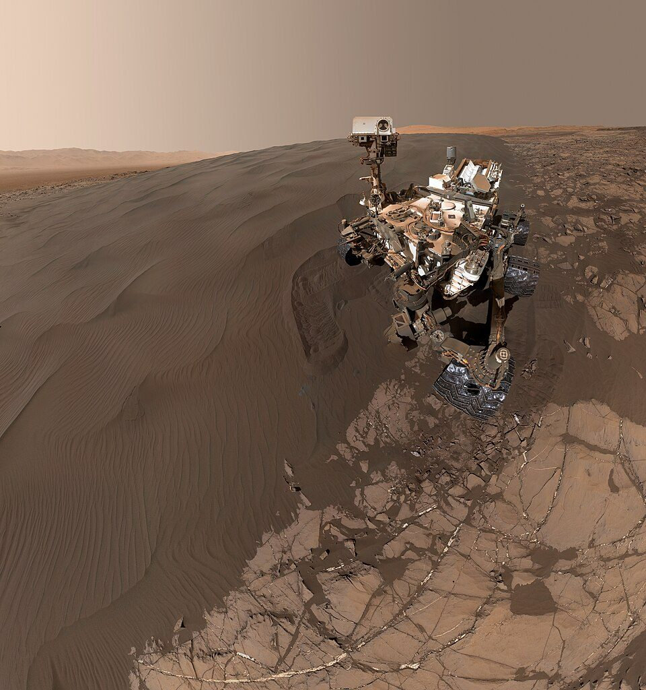
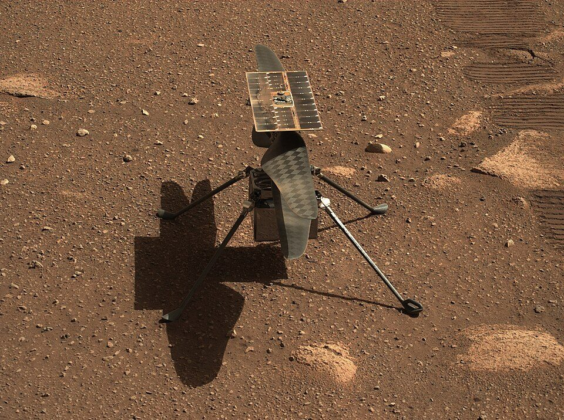

La exploración de Marte
Robots que ruedan, vuelan y perforan: medio siglo buscando agua y vida en el planeta rojo, y el sueño de enviar personas.


Ningún otro planeta ha recibido tantas visitas como Marte. Pero llegar no es fácil: casi la mitad de las misiones enviadas han fracasado, hasta el punto de que los ingenieros bromean con un «Gran Demonio Galáctico» que se come las sondas.
Medio siglo de visitas
| Misión | Año | Logro |
|---|---|---|
| Mariner 4 (EE. UU.) | 1965 | Primeras fotos de cerca: un mundo lleno de cráteres |
| Mars 3 (URSS) | 1971 | Primer aterrizaje; transmitió solo 20 segundos |
| Viking 1 y 2 (EE. UU.) | 1976 | Primeras fotos desde el suelo y experimentos para buscar vida |
| Sojourner (EE. UU.) | 1997 | Primer vehículo con ruedas, del tamaño de un microondas |
| Spirit y Opportunity (EE. UU.) | 2004 | Prueban que hubo agua líquida; Opportunity funcionó 14 años |
| Mars Express (ESA) | 2003 | Sonda europea en órbita; detectó hielo en los polos |
| Curiosity (EE. UU.) | 2012 | Laboratorio rodante en el cráter Gale, sigue activo |
| Perseverance e Ingenuity (EE. UU.) | 2021 | Recoge muestras; primer vuelo con motor en otro planeta |
| Zhurong (China) | 2021 | Primer rover chino en Marte |
Siete minutos de terror
Aterrizar en Marte es dificilísimo: la atmósfera es tan fina que los paracaídas apenas frenan, pero lo bastante gruesa como para quemar la nave. La señal tarda entre 4 y 24 minutos en llegar a la Tierra, así que la nave debe hacerlo todo sola. Para el Curiosity, de 900 kg, se inventó una grúa aérea: una plataforma con cohetes que lo descolgó con cables hasta el suelo y luego se alejó volando.
Curiosity y Perseverance
El Curiosity demostró que el cráter Gale fue un lago con agua potable donde podría haber vivido algo microscópico, y detectó moléculas orgánicas y misteriosas variaciones de metano. Sigue subiendo por el monte Sharp, de 5 km de altura.
El Perseverance explora el cráter Jezero, un antiguo delta de un río. Ha guardado decenas de tubos con muestras de roca para traerlas algún día a la Tierra. En 2024 encontró en una roca llamada Cheyava Falls unas manchas que en la Tierra suelen estar asociadas a microbios; no es una prueba de vida, pero es la pista más intrigante hasta ahora.
Ingenuity, el pequeño helicóptero
Ingenuity pesaba 1,8 kg y viajó pegado a la panza del Perseverance. El 19 de abril de 2021 hizo el primer vuelo con motor en otro planeta. Estaba previsto que volara cinco veces; voló 72, hasta que en enero de 2024 se rompió una de sus palas. Lleva un trocito de tela del avión de los hermanos Wright, que hicieron el primer vuelo con motor en la Tierra en 1903.


¿Personas en Marte?
Un viaje tripulado duraría unos dos años y medio: unos siete meses de ida, más de un año esperando a que los planetas vuelvan a alinearse y siete de vuelta. Los retos son enormes: la radiación, la pérdida de hueso y músculo, el aislamiento, producir oxígeno y combustible allí. El instrumento MOXIE del Perseverance ya demostró que se puede fabricar oxígeno a partir del aire marciano. Ni la NASA ni nadie tiene todavía una fecha firme.
Vídeos para entenderlo mejor
- Curiosity cumple 10 años en MarteDW Español · 234 mil visualizaciones
- Historia de exploración de Marte y sus distintas aportaciones a la Misión 2020 Perseverance.NASA en Español · 29 mil visualizaciones
Los vídeos son de YouTube y de sus autores. Se cargan solo al pulsar sobre ellos. Ver todos los vídeos →